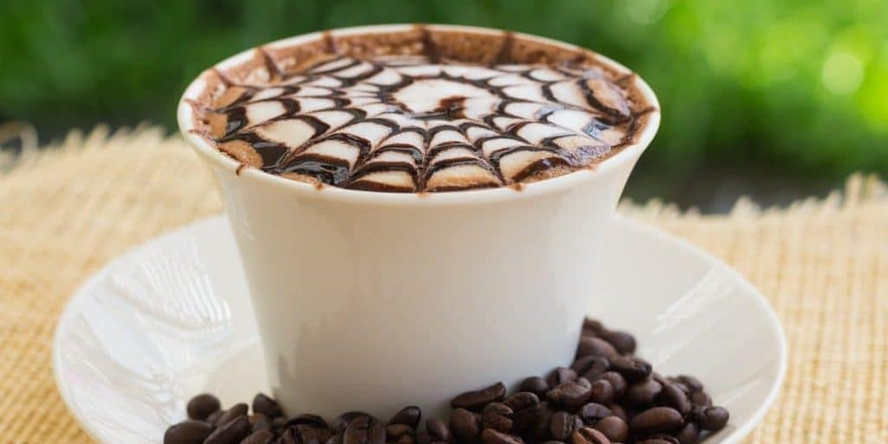

Espresso: 40tl

Cappuccino: 45tl
Cappuccino; sıcak süt, kahve ve buğulanmış süt köpüğü ile yapılan bir kahve içeceğidir.
Zengin dokusu ve enfes tadıyla bilinir.

Doppio: 60tl
İki espresso shot ile hazırlanan oldukça sert bir kahve çeşididir. İki shot olduğu için Americano’dan
dahi sert bir tadı vardır. Genellikle ayılmakta olağanüstü bir sorun yaşayan insanların tüketmeye alışık olduğu
kahvelerin de başında gelir.

Irish Coffee: 60tl
İrlanda kahvesi olarak da bilinir. Şeker ve İrlanda’ya özgü viskinin karıştırılması ve üzerine krema
dökülmesiyle yapılır. Bilindiği üzere alkollü kahveler de yeni nesil kahve anlayışının gözbebeklerinden
biri. Bu bakımdan alkollü kahveler arasında en sevileni İrlanda kahvesidir.

Mocha : 60tl
Adını Yemen’de bulunan Mucha Limanı’ndan alan Mocha, 1/3 oranında Espresso ile 2/3 oranında süt ile hazırlanır.
Latte ve Cappuccino’dan farkı ise Mocha’da çikolata şurubu veya tozu bulunuyor.

Marocchino : 70tl
İtalya’da oldukça fazla tüketilen Marocchino, 1 shot Espresso, süt köpüğü ve Hindistan cevizi tozuyla hazırlanıyor.